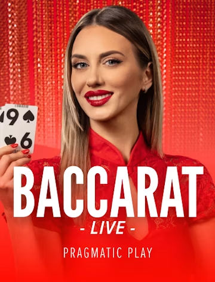
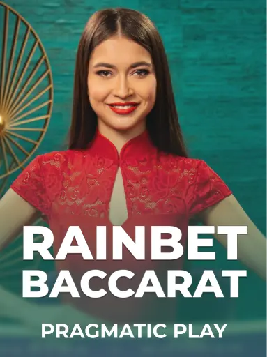
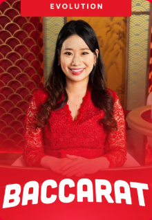

Stake
Baccarat Thumbnail

整理熱門真人娛樂遊戲，包含百家樂、21點Blackjack、輪盤Roulette與骰寶Sic Bo，快速比較 Stake、Rainbet、Shuffle 三大平台真人娛樂入口
真人娛樂是線上娛樂城中最受玩家關注的遊戲分類之一，透過真人荷官直播、即時發牌與真實遊戲畫面，讓玩家能在線上體驗接近實體賭場的遊戲氛圍。常見真人娛樂遊戲包含百家樂、21點Blackjack、輪盤Roulette、骰寶Sic Bo與龍虎Dragon Tiger，不同遊戲的規則、節奏與適合玩家都不一樣
本頁整理熱門真人娛樂推薦，並依照遊戲類型提供 Stake、Rainbet、Shuffle 三大平台的真人娛樂入口。玩家可以先了解每種遊戲玩法，再透過平台卡片前往對應遊戲或真人娛樂總覽頁，快速找到適合自己的線上真人娛樂城遊戲
真人娛樂遊戲種類多元，不同遊戲的節奏、規則與適合族群都不一樣。以下整理目前常見的真人娛樂遊戲分類，並依類型提供 Stake、Rainbet、Shuffle 三大平台的真人娛樂入口，幫助玩家快速找到適合自己的真人荷官遊戲
百家樂是真人娛樂中最受歡迎的遊戲之一，也是許多新手第一次接觸真人荷官遊戲時最常選擇的類型。百家樂玩法核心是判斷莊家或閒家哪一方點數較接近9點，規則簡單、節奏快速，不需要太多複雜操作
相較於21點Blackjack需要做策略判斷，百家樂更偏向簡單下注與快速看結果，適合想體驗真人娛樂氛圍、但不想花太多時間學規則的玩家



21點又稱Blackjack，是結合牌面規則與策略判斷的經典真人娛樂遊戲。玩家目標是讓手牌點數接近21點，同時避免超過21點爆牌。相較於百家樂，21點更需要玩家判斷是否要牌、停牌、分牌或加倍
Blackjack適合喜歡思考、策略感與牌局互動的玩家。如果你不想只看結果，而是想在遊戲過程中做出判斷，21點會比百家樂更有參與感

Stake真人娛樂中Blackjack分類完整，包含Blackjack Live、One Blackjack等多種21點玩法，適合喜歡真人荷官互動與牌局策略的玩家
前往 Stake Blackjack

Shuffle提供Blackjack相關遊戲與真人娛樂選項，適合想嘗試新平台21點玩法的玩家。Blackjack規則簡單但有策略空間，適合喜歡牌局判斷的玩家
前往 Shuffle Blackjack輪盤Roulette是經典真人娛樂遊戲之一，玩家可依照號碼、顏色、單雙、大小、區域或欄位進行投注。輪盤玩法選擇多，比百家樂更重視投注方式的變化，也適合喜歡機率玩法與多種下注選項的玩家
常見輪盤類型包含歐式輪盤、美式輪盤與法式輪盤。一般來說，單一號碼最高賠率可達35:1，下注選項多元，是真人娛樂中辨識度很高的遊戲分類


骰寶Sic Bo是以三顆骰子結果決定勝負的真人娛樂遊戲，玩家可選擇大小、單雙、點數總和、指定點數或骰子組合等投注方式。遊戲規則相對直覺，節奏也比部分牌類遊戲更快
骰寶適合喜歡簡單刺激玩法的玩家，也適合不想學太多牌局策略、只想快速理解下注方式的新手


除了百家樂、Blackjack、Roulette與Sic Bo之外，各平台也會提供更多真人娛樂與現場賭場遊戲，例如龍虎Dragon Tiger、Game Shows、Mega Wheel、Lightning Roulette或其他主題真人遊戲。若玩家想一次瀏覽完整真人娛樂內容，可以前往各平台真人娛樂總覽頁
真人娛樂適合喜歡即時互動、真人荷官直播與經典娛樂城遊戲的玩家。不同類型的遊戲適合不同玩家，選擇前可以先依照遊戲節奏與玩法難度進行比較
真人娛樂最大的特色就是可以透過直播畫面看到真人荷官發牌、轉盤或開骰，整體互動感比一般電子遊戲更強
新手可以先從百家樂、骰寶或龍虎開始，這類遊戲規則簡單，較容易快速理解
若想要更有參與感，可以選擇21點Blackjack，因為遊戲過程中需要判斷是否要牌、停牌或分牌
輪盤Roulette提供紅黑、單雙、大小、號碼與區域等多種投注方式，適合喜歡機率變化與多元下注的玩家
看完真人娛樂，再深入了解其他遊戲類型與平台評測，找到最適合你的玩法